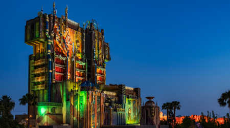

Disneyland Secrets


If you think Disneyland has good rides, check out the rides at Disney California Adventure. From thrill rides to classic Disney movie rides, they have it all. Here's my top 5 favorite rides that you must go on if you visit DCA (as annual passholders like to call it):
One of my husband and I's favorite things to do is deciding where we will eat in California Adventure. One day we will like Lobster Nachos, the other day we want something a little more fancier like Carthay Circle. Here's a list of the top speciality food and their locations:
Disneyland has competition when it comes to entertainment. My husband and I often find ourselves wanting to watch shows in California Adventure over Disneyland - yes really. Here are the must shows you need to see: